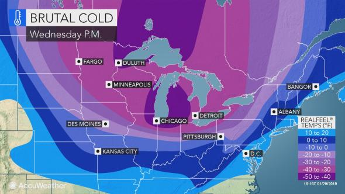

Facebook Secretly Pays Teens to Install App That Spies on All Phone and Web Activity
'I have never seen such open and flagrant defiance of Apple’s rules by an App Store developer'
Chaos at Facebook as employees unable to open company's internal apps on their iPhones

Deadly deep freeze envelops Midwest -- even stops the mail
Coldest temps in a generation; frostbite in minutes...
NORTH DAKOTA WIND CHILL TOUCHES -75!
'Avoid taking deep breaths; minimize talking'
Cities scramble to keep homeless, vulnerable safe...
Private companies add 213,000 jobs in January, easily topping expectations
US Announces Sweeping Sanctions Against Maduro, Venezuelan State-Owned Oil Company
'5,000 Troops to Colombia,' Reads Bolton's Clearly Visible Notepad at News Conference
Venezuela high court prevents opposition leader Guaido from leaving country
Citizens take to streets to demand Maduro step down
$840M in gold bars prepared for loading onto Russian jet at Venezuelan airport
PANICKED LIBERALS TRY TO BULLY SCHULTZ OUT OF 2020
Schultz: 'I Must be Doing Something Right'
Schultz, Bloomberg hit Warren on proposed tax hike on top earners
Kamala: 'No reason in civil society to have assault weapons ... that can kill babies'
Maintains position calling for elimination of private health insurance...
Several Early Rain members released from detention
Apple opens new chapter amid weakening iPhone demand...

Dems to strike 'so help you God' from witness oath
Pakistan Braces for Violent Protests...
Americans Aren’t Having Enough Babies to Repopulate, CDC Reports
OB/GYNs, Nurses Blast NY Abortion Law: NEVER Necessary to Kill Baby for Health, Life of Mother!
Planned Parenthood's new business: Sex-change prescriptions
Team of Israeli scientists say they'll have cure for cancer within a year
Senators ask Facebook why it tricked kids into spending parents’ money
Google May Face RICO, Defamation Lawsuits Due to SPLC Partnership, Lawyers Say
Sergey Brin Foundation Named in Dark-Money Campaign Finance Complaint
Court's Biometrics Ruling Poses Billion Dollar Risk to Facebook, Google...
New book claims Vatican contains 'one of the largest homosexual communities in the world'
Pope lowers expectations for next month's sex abuse summit...
Rules out change to priest celibacy rules
Trump blasts intel chiefs as 'passive and naive' over Iran assessment
Las Vegas shooting still a mystery as FBI closes investigation...
Thousands of strangers show up to funeral of Air Force vet who had no family
Study: Increased screen time in young children associated with developmental delays
36,000 pounds of Tyson chicken nuggets recalled
Feds rest case against El Chapo
Brutal drug lord revered as 'Robin Hood' in home state of Sinaloa...
© 2019 Christian Daily Reporter | Editor: Adam Ford
CDR Comics | CDR Talks | CDRticles | Manifesto
100% reader-funded: Support CDR!